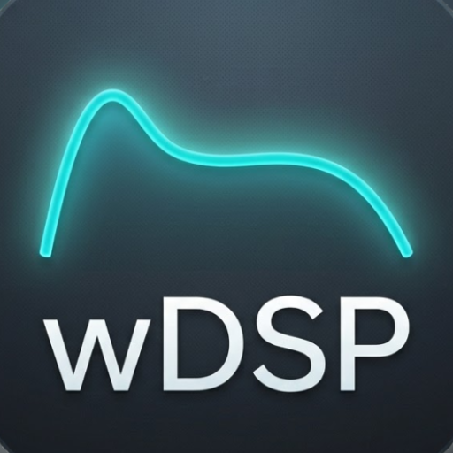
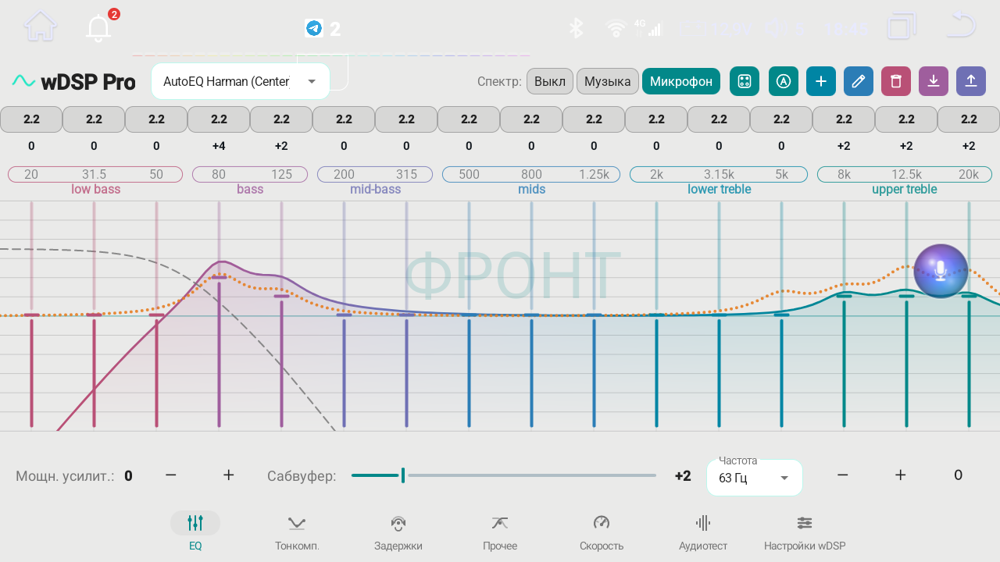
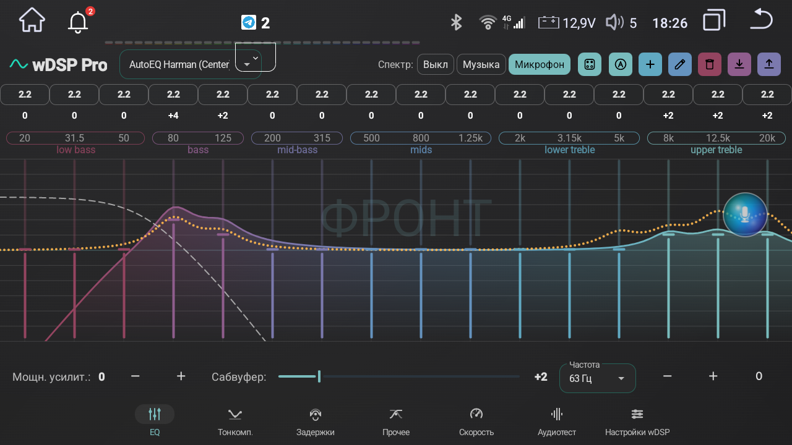
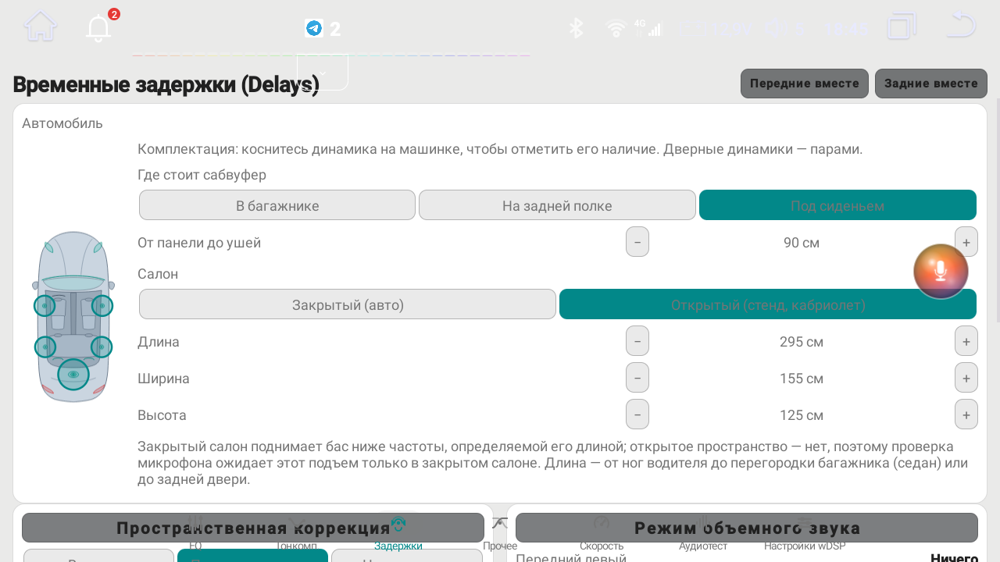

wDSP Pro Studio DSPwDSP Pro bridges digital sound processing with your car's physical hardware: cabin auto-calibration via the head unit's built-in microphone, independent Front and Rear equalizers, adjustable Q-factor, and hardware loudness compensation.

Standard car stereos treat all car speakers as simple domestic boxes in a symmetrical living room. But a car cabin has reflective glass, sound-absorbing seats, and speakers buried near your ankles. wDSP Pro changes everything.
The app measures cabin acoustics using the head unit's built-in microphone. Just sit in the driver's seat and run the acoustic sweep test.

Factory firmware locks rear speakers to the front ones and fixes EQ bandwidth. With the Enhanced MCU installed directly from wDSP Pro, the physical audio processor unlocks its true capabilities.
Independent 16-band equalizers for the front row and rear passengers. Tune crisp vocal stage upfront while keeping soothing ambient sound in the rear.
Choose narrow or wide bandwidth for each frequency band. Narrow bandwidth helps suppress specific interior resonances, while wide bandwidth shapes smooth, musical tone.
True physical contouring processed directly inside the sound chip. Enjoy punchy, textured bass and sparkling highs even at whisper-quiet night volumes without ear fatigue.
Steep 24 dB/octave crossovers and 0°/180° subwoofer phase switch. Your sub seamlessly locks with front midbasses, sounding like it punches directly from the dashboard.
The cabin measurement automatically balances the output level for each door to compensate for speaker sensitivity differences and interior placement.
Keeps the head unit powered on for 0 to 60 minutes after switching off ignition — perfect for short stops without a slow cold reboot.
You don't need to be an audiophile to appreciate the difference. The moment you tap Enable, your car interior transforms completely.
Because the driver sits closer to the left speaker than the right, stock sound is lopsided and sounds trapped under the door panel. wDSP Pro delays the near speakers by fractions of a millisecond.

Designed with automotive ergonomics: high contrast day/night themes, large touch targets, and full autonomy without tedious tinkering.
Check for updates, monitor live MB download progress in the background, and install the latest version with a single tap directly inside the app.
Comprehensive illustrated documentation built right into the app. Available 100% offline in 27 native languages whenever you want to check a feature.
Dynamic audio visualizer and screensaver that pulses gracefully to your music during relaxed night drives or while parked.
After sleep or restart, wDSP automatically relaunches your last active media player.
Day and night themes, switching automatically or manually.
Export your custom tuning presets and full system settings to storage, share them with friends, or restore them instantly after a head unit reset.
Try wDSP Pro completely free with full access to all features. Experience the acoustic difference in your own car first — then support the developers with a licence if you love it.